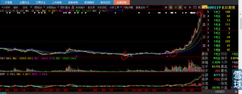
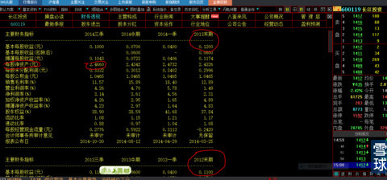
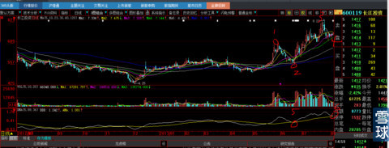
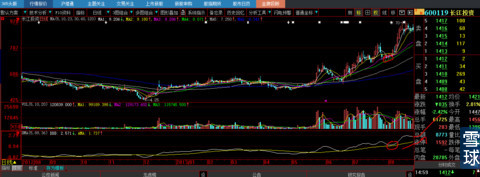

看到上图吗？这是600119长江投资2013年5月—10月股价走势图，从第一个红圈处4.25元，第二个红圈处是7.2元，第三个红圈处是24.71元。24.71/4.25=涨幅4.8倍，24.71/7.2=涨幅2.43倍。
下图是长江投资的经营情况表，2012年每股收益0.11元，2013年每股收益0.12元，2014年每股收益0.13元。每股净资产2013年末期只有2.43元。

我的问题有两个：
1、了解了上面基本情况后，我建议你们自己去复盘，一根K线一根K线的过，一根K线可是一天啊大哥。你们扪心自问：1、你会在4,25元位置买吗？你问我啊？我肯定的回答你：不会买。2、就算你比我牛逼买了，你可能持有那么久么？从第一个圈算起共计11个月，从第二个圈算起5个月。
2、在第二个圈的位置，技术上牛股的一切技术条件都已经展现在你们面前了，你会买吗？见下图。
你再回头去看那些财务资料，问我会不会买敢不敢买？我的回答是：我会买！
信不信由你。因为我知道进场资金的真金白银比什么都直白直观，胜过百万言空洞的分析资料。从这个时候算起，理论上会有2.4倍的涨幅回报。

注意看：1、股价从1的位置到2虽然实现了完全回吐，但是正好打到我DMA支撑处。为什么？因为1的位置短期涨幅够高，够庄家有充分的时间实现所有的摆动指标MACD、KDJ等等全部连续累积走坏，让跟风盘彻底死心在2的位置割肉。就算是我，此时此刻既知道也不会发现这个牛股。当股价通过连续量的堆积走到3的位置，我一定会发现它。
股价的突破后回踩，正好回落在我的DMA支撑线上，这个黄线已经趋势向上，这可是长期价差线啊！不可能仅仅股价短期下跌就改变方向，股价短期摆动指标，也就是那根白线，到是像MACD那样走软趋势向下，给市场一个明确趋势将向坏的方向发展，我的DMA设计就是要达到这个效果，提前窥测“庄家洗盘的极限所在”，这时候股价是7.2元，当然买罗。你问我买错怎么办？好办，股价跌幅这么深，并长达9天，一般来说，股价跌到第9天，就是大牛股洗盘的极限，因为再过1天就是第10天，也就是2周的最后一天，假设上周是实阴线，本周不拉起就变成两根周阴线，这个位置已经是我说的相对高位了，大部分筹码已经纳入庄家口袋，不拉起就意味着周线的趋势变坏引起市场参与人看空的共识与共振。庄家必须兼顾长（月）、中（周）、短（天）趋势图形的构造。
经过几天后股价再次放量突破，下图红圈就是我们买入的地方。这个时候对于我这样的人来说股价图形已经没有任何秘密了。剩下的事情耐心持股。
你再复盘N次，这是真金白银的实战，你摸着自己的良心问自己：第一、你会不会在第二个买点来临的时候买？如果你身在其中会不会卖？第二、买入后会不会持有长达5个月，那可是熊市环境啊？
如果你的回答是否定的，那么，你可以洗洗睡了。这个市场不适合你，就算你撞大运，命中遇贵人，别人告诉你安慰你，你一样没有这样的财运早早就会放弃。除非你：要么就是脑残无知无畏，要么就是顶尖高手。如果你不是这两类人，属于中间夹层半吊子。好了，恭喜你：韭菜命！赶紧退出，人生的路还长，不要在个人的短板处浪费人生。

3、从上面的计算中我们可以发现，4,.25元买，就可以理论上有4.8倍的涨幅，7.2元买只有2.4倍涨幅，悬殊为何如此巨大？对的，这就是我为什么让天天给我留言“红太阳”要不要换股操作人“不要动”的原因。
4、从对股票以上的分析，谁再敢站出来说“根本没有庄股？都是市场共振产生的”，你说说试试？我保证不打死你。那样的基本面股价能够翻5倍，然后你告示我是因为市场共振？你以为全世界人都跟你一样没有任何独立思想的白痴？
5、庄家就是负责把图形做好引起共识勾引技术派短线客追高，再把技术图形搞坏并且长达N日，庄家用耐心在相对低位回补高处抛给短线客追高的割肉盘，就如同一鱼三吃，曲线总比直线长的道理，股价总体涨幅4倍，庄家在里面如同开赌博铺子，起起伏伏，曲线折合直线可能有8倍涨幅。
6、大家会发现一个规律：越是熊市，大牛股越多，越是大牛市，反而技术形态的牛股越少。恭喜你：答对了。因为熊市里市场资金总量少，场内大资金只能不断的制造财富神话，吸引眼球，谎言重复1万次就变成了真理，集中有限兵力在局部战场形成绝对优势。就如同最近一周以及未来一段时间，市场资金少，也会集中优势资金创出新的财富神话一样，我想我们已经51%的概率押中了。你们看看前期的券商股走势，就是钱多任性，市场资金打出的顶部而不是隐匿其中的庄家引导的结果。现在还有证券执业的专业人员去年3月、9月写了很多券商股推荐文章，真的是瞎猫撞上死老鼠撞大运，现在天天吹牛并已经完全疯了的鼓吹券商股会再翻十倍，还TNN的真有人信，粉丝都是百万人以上。人啊真是个贱东西，属核桃的命要被砸着吃才痛快。理由和理论一大套一大套，什么将来股民“股票卡”可以一卡通、银行的生意都会被券商抢完，所以说券商股未来是不是要再涨十倍？真TM的说疯话，也不用脚趾头想想：你什么时候见过银行被券商挤跨的？美国够发达吧有没有出现过？退一步讲，即使专业做银行的都被经济危机、坏账、业务灵活性破产，你一个对银行完全外行的券商就一定能比银行做得更专业？
这篇文章，就是要我的第一批亲粉们以此对照你们今天手中持股的600638新黄浦，你们是新兵，新兵怕炮。我是你们的老兵“心大”，路还很长，我将一路小心翼翼地呵护你们这些初次上战场就面对股市最强大、复杂战局，使你们成为未来所向披靡最强悍的战士。
亲粉就是亲粉，记得我很多回复：拔剑四顾心茫然，量你一辈子也体会不到这种看透后的执行、傲慢、孤寂与苍凉！
 |
大牛股不可能与你有缘炒的是心 2015-01-14 18:43:35 |
Copyright © 1996-2014 SINA Corporation All Rights Reserved.